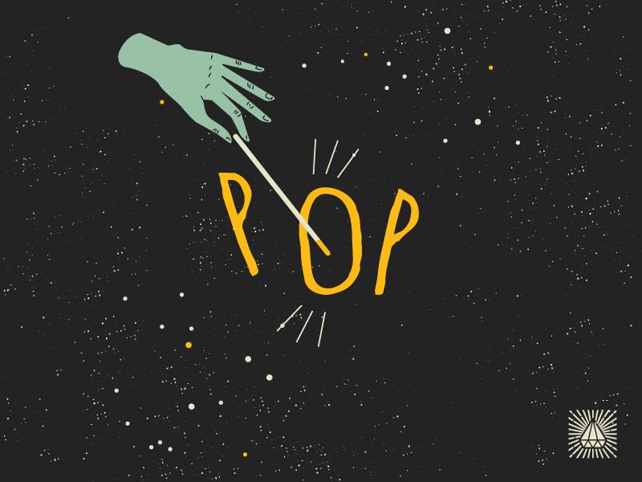

AI Magic WEB APP
NOTE - Get your left hand in front if the Webcam to play Peter Pan Song. Get your right hand in front of the Webcam to play the Harry Potter Song.
keep Atleast 2 feet distance from the webcam,so that you writsts are detected quikly.
